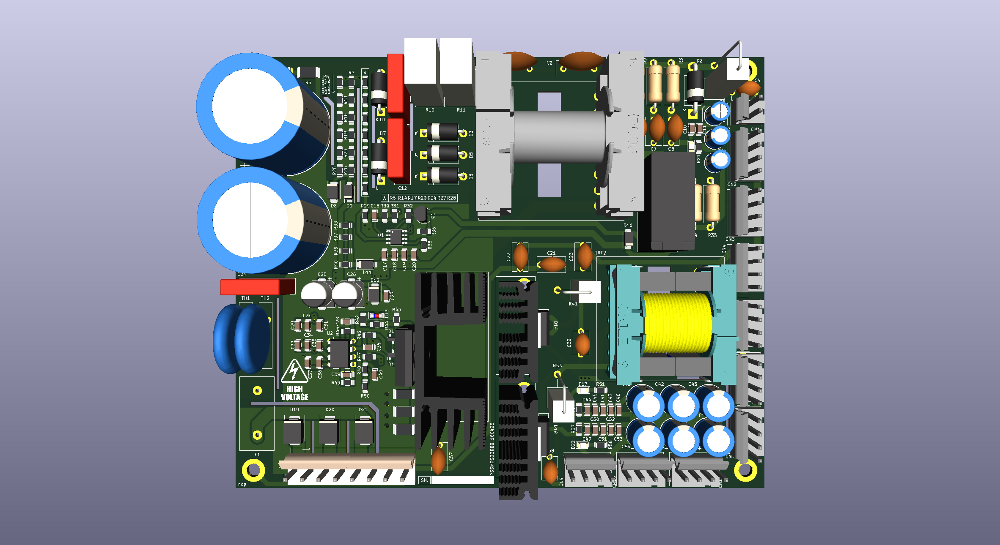
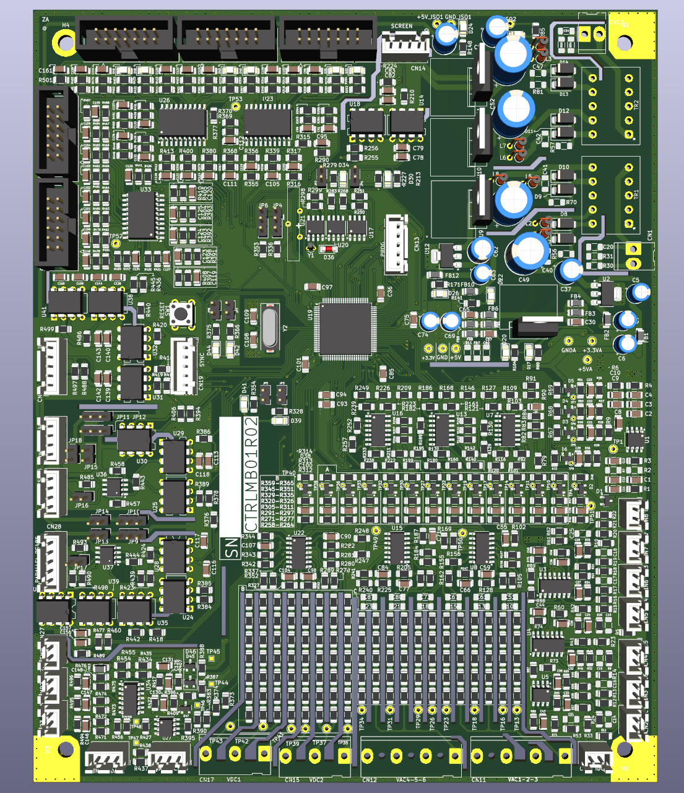
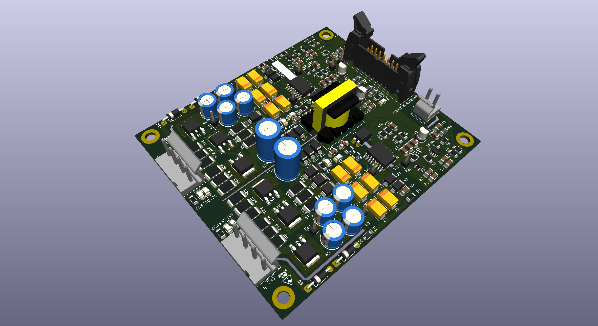
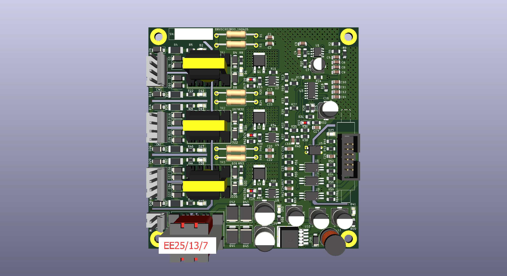

Merhaba, Ben Nihat Cengiz Pamuk
Elektrik-Elektronik Mühendisi / Biyomedikal Mühendisi
Elektrik-Elektronik ve Biyomedikal Mühendisiyim. Güç elektroniği, gömülü sistemler ve devre tasarımı alanlarında AR-GE, prototipleme ve üretim süreçlerinde görev aldım. Endüstriyel güç kaynakları ve medikal cihaz projelerinde elektronik kart tasarımı, test/doğrulama ve operasyonel süreç yönetimi deneyimlerine sahibim.

Mühendislik Yaklaşımım & Özet
Ar-Ge'den Üretime Uçtan Uca Süreç
Konsept tasarımdan şematik çizimine, PSIM simülasyonlarından KiCad/Altium ile 2 katmanlı PCB layout'una, prototipleme, lehimleme, osiloskop ile donanım doğrulamasına ve seri üretim BOM yönetimine kadar tüm adımlarda bizzat görev aldım.
Güç Elektroniği & Sürücüler
40 kVA kesintisiz güç kaynakları (UPS) mimarisinde flyback SMPS, yüksek hızlı ve galvanik izoleli IGBT sürücü devreleri, tristör (SCR) faz kontrol tetikleme modülleri ve EMI/EMC standartlarına uyumlu donanım katları geliştirdim.
Medikal & Gömülü Sistem Bütünlüğü
Biyomedikal mühendisliği altyapımla TÜBİTAK ve KOSGEB destekli “Otonom Odyometri Cihazı” projesinde kurucu ortak olarak yer aldım; STM32 tabanlı kontrol, HMI dokunmatik arayüz tasarımı, RS485/UART haberleşme ve medikal sertifikasyon aşamalarını yürüttüm.
Tasarlanan Elektronik Kartlar & 3D Modeller
Bizzat tasarladığım, üretime aktarılan ve testleri tamamlanan güç elektroniği kartlarının 3D renderları.

UPS Ana Kontrol Kartı
40 kVA endüstriyel UPS mimarisi için tasarlanmış merkezi kontrol ve sinyal işleme anakartı. STM32 mikrokontrolcü, izole analog/sayısal besleme katları, 3-faz AC ve DC bara örnekleme şebekesi, HMI dokunmatik panel ve RS485 haberleşme arayüzleri.
Flyback SMPS Güç Katı Tasarımı
UPS ve endüstriyel sistemlerin yardımcı besleme katları için tasarlanmış izole flyback SMPS kartı. Yüksek gerilim ayrımı, filtreleme bobinleri, koruma devreleri ve termal soğutucu dizaynı içerir.

İzole IGBT Sürücü Kartı (Gate Driver)
40 kVA UPS evirici modüllerinde kullanılan, yüksek anahtarlama hızına ve parazit bağışıklığına sahip izole DC/DC ve optik izolasyonlu IGBT kapı sürücü devresi.

Tristör (SCR) Tetikleme ve Sürücü Kartı
Statik bypass ve doğrultucu katlar için darbe transformatörlü (EE25/13/7), yüksek gerilim izoleli 3 kanallı tristör kapı tetikleme kartı tasarımı.
40 kVA UPS Tasarım & Üretim Entegrasyonu
BetaUPS bünyesinde 40 kVA Kesintisiz Güç Kaynağı projesinde tasarım aşamasından saha üretimine kadar tüm teknik süreçler: Güç katları, HMI dokunmatik operatör paneli arayüzü, RS485/UART haberleşme, test prosedürleri ve malzeme tedarik (BOM) yönetimi.
Otonom Odyometri Medikal Cihazı
AiHear Teknoloji A.Ş. kurucu ortaklığıyla TÜBİTAK ve KOSGEB destekli otonom işitme test cihazı geliştirilmesi. Medikal donanım tasarımı, akustik testler, biyouyumluluk ve regülatif sertifikasyon hazırlık süreçlerinin yönetimi.
İş & Staj Deneyimleri
Elektrik-Elektronik Mühendisi
BetaUPS Kesintisiz Güç Kaynakları & Biensis Mühendislik
- 40 kVA UPS Projesi: Tasarım aşamasından seri üretime kadar tüm teknik ve operasyonel aşamalarda aktif sorumluluk.
- PCB Tasarımı: Flyback SMPS, IGBT sürücü ve tristör sürücü kartları dahil olmak üzere 2 katmanlı PCB tasarımlarını ve geliştirme çalışmalarını yürüttüm.
- Test & Doğrulama: Elektronik prototiplerin üretimini, donanım getirme (bring-up), osiloskop testlerini ve doğrulama süreçlerini tamamladım.
- HMI & Protokol Entegrasyonu: Dokunmatik ekran operatör arayüzlerini tasarladım; RS485, I2C ve UART haberleşme entegrasyonlarını kurdum.
- Operasyonel Yönetim: BOM (Malzeme Listesi) yönetimi, kritik komponent tedariği ve sipariş takibi süreçlerini yönettim.
Kurucu Ortak
AiHear Teknoloji A.Ş.
- TÜBİTAK ve KOSGEB destekli “Otonom Odyometri Cihazı Geliştirilmesi” projesinde kurucu ortak olarak yer aldım.
- Medikal cihaz donanım geliştirme, doğrulama testleri ve medikal cihaz sertifikasyon süreçlerinde aktif rol üstlendim.
Stajyer Mühendis
Canlar TM Tekstil Makina A.Ş.
Tekstil sektöründe kullanılan yüksek kapasiteli endüstriyel makinaların üretim, montaj, kurulum ve saha test aşamalarında görev aldım.
Stajyer Mühendis
3G Medikal
Endoskopi ve medikal görüntüleme cihazlarının teknik destek, kurulum ve klinik servis süreçlerinde deneyim edindim; servise gelen cihazlarda ilk arıza tespit adımlarını yürüttüm.
Biyomedikal Stajyeri
İstanbul Florence Nightingale Hastanesi (Şişli & Gayrettepe)
Kapsamlı medikal cihaz envanteri oluşturulması, ameliyathane ve yoğun bakım cihazlarının periyodik bakım, kalibrasyon ve arıza giderme operasyonlarında görev aldım.
Teknik Yetenekler & Araçlar
Tasarım & Simülasyon Araçları
Güç Elektroniği
Gömülü Sistemler & Haberleşme
Elektronik Donanım & Üretim
Eğitim Bilgileri
Lisans, Elektrik-Elektronik Mühendisliği
Zonguldak Bülent Ecevit Üniversitesi
Güç elektroniği, elektrik makineleri, devre teorisi, kontrol sistemleri ve gömülü donanım alanlarında teorik ve pratik mühendislik formasyonu.
Lisans, Biyomedikal Mühendisliği
Zonguldak Bülent Ecevit Üniversitesi
Biyomedikal enstrümantasyon, medikal elektronik, sinyal işleme, fizyolojik modelleme ve tıbbi cihaz tasarım süreçleri.
Benimle İletişime Geçin
Mühendislik projeleri, danışmanlık veya kariyer fırsatları için doğrudan bana ulaşabilirsiniz.
Konum
Maltepe, İstanbul / Türkiye
Özgeçmişimi PDF Formatında İndirin
Ayrıntılı teknik özgeçmişimin Türkçe ve İngilizce PDF kopyalarına doğrudan erişebilirsiniz.